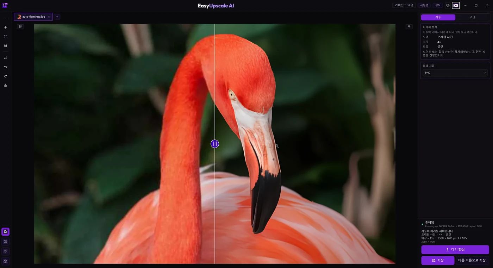
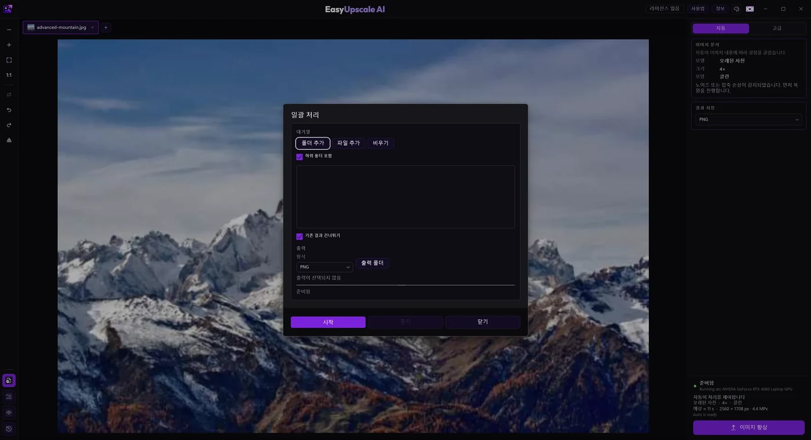
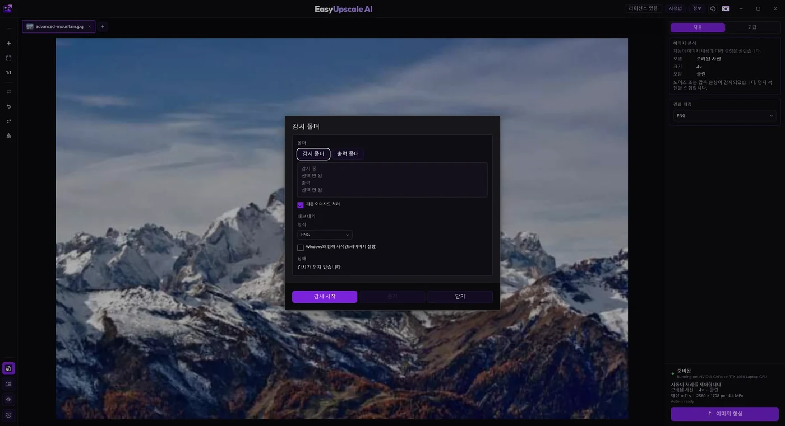

이 웹 데모
브라우저에서 빠르게 체험
무료
확대 체험하기확대2배
워터마크작게, 모서리에 표시(워터마크 없는 결과는 €1.49, 또는 라이선스 사용)
모델3개 모델
자동 모드아니요
고급 모드아니요
일괄 처리(폴더 전체)아니요
감시 폴더아니요
저장 형식PNG
속도브라우저와 그래픽 카드에 따라 다름
큰 이미지큰 이미지는 브라우저의 메모리 한계에 부딪힐 수 있습니다
오프라인 처리아니요, 모델을 서버에서 내려받습니다
Windows 앱 · Microsoft Store · 일회성 라이선스
내 PC에서 사진을 최대 4배까지 확대하세요. 더 선명하게, 업로드 없이, 구독 없이. 자동 모드는 무료이며 일회성 라이선스로 고급 모드, 4배, 일괄 처리, 감시 폴더를 사용할 수 있습니다.
같은 모델의 무료 데모입니다. 2배까지, 작은 워터마크가 들어갑니다. Windows 앱은 더 빠르고 워터마크가 없습니다.
Windows 앱의 실제 결과입니다. 선을 끌어 일반 확대와 EasyUpscale AI를 비교해 보세요.
자체 텍스트 모델: 글자, 라벨, 문서를 위해 처음부터 학습했으며 상업적으로 사용할 수 있는 데이터만 썼습니다. 라벨, 간판, 인쇄된 페이지가 선명하게 유지됩니다. Windows 앱에서는 Auto 모드가 사진 속 글자에 이 모델을 쓰고, 고급 모드에서 직접 고를 수 있습니다.


작은 원본은 더 큰 이미지를 축소한 사본이며, 텍스트 페이지는 원래 크기로 만든 뒤 축소했습니다.
Windows용 전체 앱
EasyUpscale AI는 무료이며 워터마크가 없습니다(자동 모드, 2배 확대). €14.99의 1회성 라이선스로 고급 모드, 4배, 일괄 처리, 감시 폴더, 추가 형식을 사용할 수 있습니다.



웹은 빠른 체험용입니다. 앱은 무료이며 워터마크가 없고, 라이선스로 나머지 기능을 사용할 수 있습니다.
브라우저에서 빠르게 체험
Windows 앱, 라이선스 없음
라이선스가 있는 Windows 앱
RTX 4060 Laptop이 있는 컴퓨터 한 대에서의 자체 측정이며, 짧을수록 좋습니다. 다른 컴퓨터에서는 값이 다릅니다.
아니요. 계산은 브라우저에서 그래픽 카드로 실행됩니다. 서버에서는 모델만 내려받습니다.
네, 2배 확대는 무료이며 결과물 모서리에 작은 워터마크가 들어갑니다. 워터마크 없는 결과는 이미지당 €1.49이고, 라이선스 키를 쓰면 계속 제거됩니다. Windows 앱은 2배까지 무료이며 워터마크가 없고, 라이선스로 4배 확대를 사용할 수 있습니다.
WebGPU를 지원하는 최신 Chrome 또는 Edge입니다. WebGPU가 없으면 프로세서에서 계산하며 눈에 띄게 느립니다.
앱은 브라우저의 제약 없이 그래픽 카드를 직접 사용합니다. RTX 4060에서의 자체 측정으로 약 2~3배 빨랐으며, 결과는 컴퓨터마다 다릅니다.
앱은 최대 120 Mpx 결과까지 처리합니다. 브라우저에서는 큰 이미지가 메모리 한계에 부딪힐 수 있어, 큰 이미지에는 앱이 더 적합합니다.
웹 데모는 충분히 지원하는 모든 브라우저에서 동작합니다. 전체 앱은 Windows 전용입니다.
14일 이내에 환불받을 수 있습니다.
확대 처리는 오프라인으로 동작합니다. 라이선스 키는 온라인으로 활성화되고 앱이 시작될 때 확인합니다. 인터넷이 없어도 라이선스는 7일간 유효하며, 그 후에는 연결이 필요합니다.
Windows 10(버전 1903 이상) 또는 Windows 11(64비트), DirectX 12를 지원하는 그래픽 카드, 약 1 GB의 디스크 공간, 권장 메모리 8 GB.